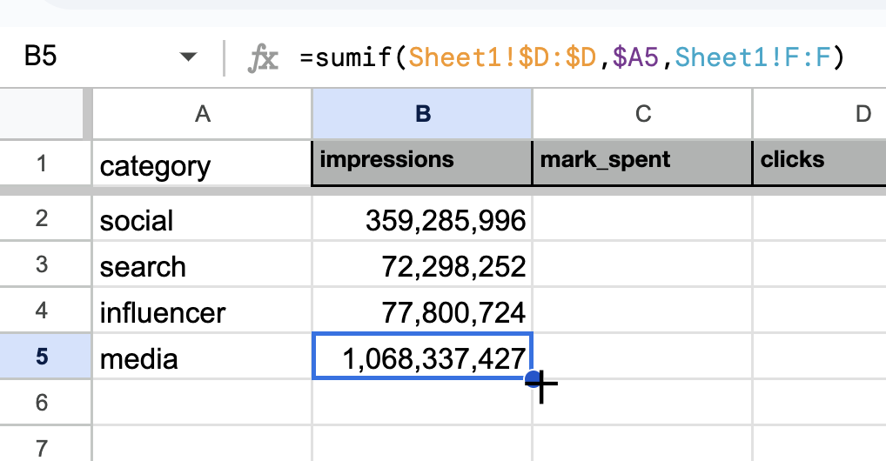
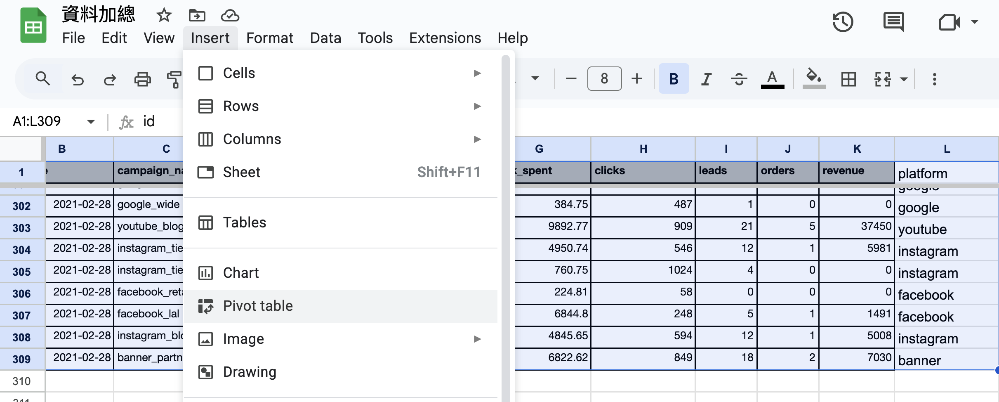

Part 1 – Exploratory Analysis & KPI Overview
Introduces key workflows and tools in Google Sheets / Excel to explore marketing data using formulas and pivot tables.
When receiving a dataset, the first step is usually to get a preliminary understanding of it: the timeframe, range, trends, etc.
Common methods include:
Functions:
- max, min
- sum, sumif
- count, countif
- find
- left, mid, right
- unique
- lower
Pivot tables
For this series of articles, we'll use a dataset downloaded from Kaggle: Digital Marketing Metrics & KPIs to Measure (SQL)
Kaggle is a platform rich in machine learning resources, including datasets and pre-built models for reference.
The functions used in this series are also applicable to Excel.
After downloading and unzipping the file, paste the data into Google Sheets.

Min, Max
First, use the MIN and MAX functions to check the minimum and maximum values of numeric fields such as impressions, spent, clicks, leads, orders, and revenue. It can also be used to check the date range.
Copy the headers to a new sheet and use rows 2 and 3 to show the minimum and maximum values respectively.

For the minimum date (cell B2), use the formula =MIN(Sheet1!B:B) to find the earliest date in column B of Sheet1. For the maximum date (cell B3), simply replace MIN with MAX: =MAX(Sheet1!B:B)
The same logic applies to other numeric columns — just change the target column accordingly.
In terms of formatting, set the date column to “Date” via Format → Number → Date. Use standard number format with comma separators for better readability.
Now we can see the data is about digital marketing performance in February 2021. The variation is quite large, possibly due to results from different campaign types.
Sumif, Countif
To further explore the dataset using campaign_name and category, we first need to organize data a little bit.
Notably, the campaign_name field includes platform names — Facebook, Instagram, Google, YouTube, etc. — which we’ll extract for analysis.
The structure places the platform and campaign type on either side of an underscore. Use FIND and LEFT to extract the platform name:
=LEFT(C2, FIND("_", C2) - 1)Use LOWER to standardize the name (all lowercase):
=LOWER(LEFT(C2, FIND("_", C2) - 1))Or use column M for clarity:
=LOWER(L2)
Now we can aggregate data by category and platform.
Start with categories: In a new sheet, set:
=UNIQUE(Sheet1!D:D)Use SUMIF to get totals. Example (impressions for "social"):
=SUMIF(Sheet1!$D:$D, $A2, Sheet1!F:F)Remember to put dollor sign $ to lock references when dragging the formula across the sheet.
Once we've summed all categories and metrics, drag the formula across for all columns.
Then calculate key metrics:
- CTR = clicks / impressions
- CPC = spend / clicks
- CPL = spend / leads
- CPA = spend / orders
- ROAS = revenue / spend
- Average order price
Also compute share of clicks, leads, orders, and revenue per category.

Observations:
- Social and Media bring ~90% of impressions
- Leads and orders mostly from Social and Influencer
- Influencer channel yields highest ROAS ($2.54)
- Media is second ($1.22), $1.32 lower
This matches general marketing performance: display/media ads drive exposure; other channels drive conversions and revenue. Consider increasing spend on high-performing channels like Influencer — assuming stable performance.
To go further, analyze platform, campaign, and daily changes. However, we don’t know each campaign's category. While this can be checked manually, the better approach is using reference tables — covered in the next article: Lookup & Reference Techniques
Currently, we have four sheets. Give them meaningful names like raw, maxmin, category, and platform.
All of the above can also be done with a pivot table.
Pivot Table
In the raw sheet, select the full data range. From the menu, choose Insert → Pivot Table.
Use the Pivot Table Editor to build your view.

Google Sheets supports automatic grouping by category or platform.

For clicks %: Add clicks twice under Values, then set one to "% of grand total".
For CPC: Add a Calculated Field:
=SUM(mark_spent)/SUM(clicks)Rename the field to "CPC".

Setting up a pivot table takes more time initially, but once it's ready, it’s easy to explore different dimensions — by category, platform, date, or campaign — and quickly create different versions.